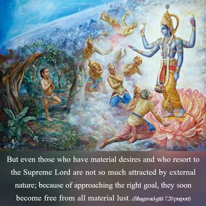

Those whose intelligence has been stolen by material desires surrender unto demigods and follow the particular rules and regulations of worship according to their own natures.

Those who are freed from all material contaminations surrender unto the Supreme Lord and engage in His devotional service. As long as the material contamination is not completely washed off, they are by nature nondevotees. But even those who have material desires and who resort to the Supreme Lord are not so much attracted by external nature; because of approaching the right goal, they soon become free from all material lust. In the Śrīmad-Bhāgavatam it is recommended that whether one is a pure devotee and is free from all material desires, or is full of material desires, or desires liberation from material contamination, he should in all cases surrender to Vāsudeva and worship Him. As stated in the Bhāgavatam (2.3.10):
akāmaḥ sarva-kāmo vā
mokṣa-kāma udāra-dhīḥ
tīvreṇa bhakti-yogena
yajeta puruṣaṁ param
Less intelligent people who have lost their spiritual sense take shelter of demigods for immediate fulfillment of material desires. Generally, such people do not go to the Supreme Personality of Godhead, because they are in the lower modes of nature (ignorance and passion) and therefore worship various demigods. Following the rules and regulations of worship, they are satisfied. The worshipers of demigods are motivated by small desires and do not know how to reach the supreme goal, but a devotee of the Supreme Lord is not misguided. Because in Vedic literature there are recommendations for worshiping different gods for different purposes (e.g., a diseased man is recommended to worship the sun), those who are not devotees of the Lord think that for certain purposes demigods are better than the Supreme Lord. But a pure devotee knows that the Supreme Lord Kṛṣṇa is the master of all. In the Caitanya-caritāmṛta (Ādi 5.142) it is said, ekale īśvara kṛṣṇa, āra saba bhṛtya: only the Supreme Personality of Godhead, Kṛṣṇa, is master, and all others are servants. Therefore a pure devotee never goes to demigods for satisfaction of his material needs. He depends on the Supreme Lord. And the pure devotee is satisfied with whatever He gives.